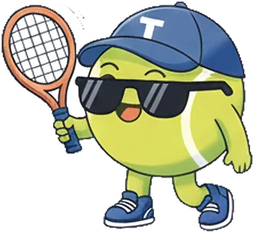
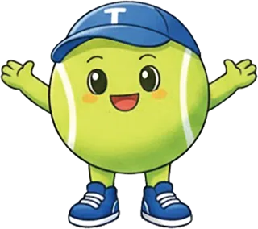

COMPLETE THE STORY
THE STORY ROUTE
這集的故事球路
調整球場與閱讀樣式
YOUR FEEDBACK
把想法送回 Tenniac

全部完成！記得寄回 Tenniac網球愛客 PODCAST · 訪談共編

請在每一段選擇：保留／要修改／有疑問，並補上你的故事，最後寄回 Tenniac。
THE STORY ROUTE
COMPLETE THE STORY
YOUR FEEDBACK

全部完成！記得寄回 Tenniac